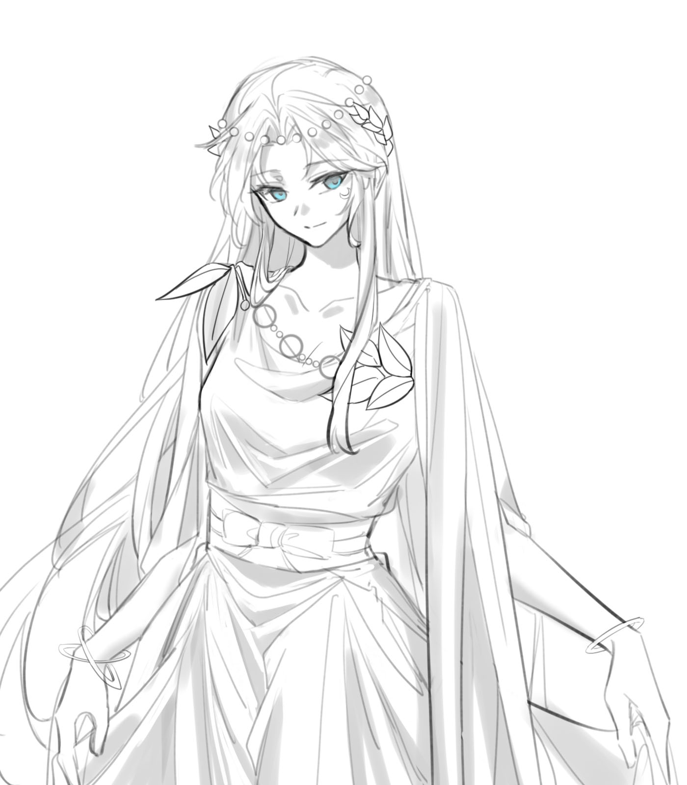

Selene

塞勒涅（Selene）是奥林匹斯神系中司掌治愈与月光的月之女神，同时也是月亮本身的化身。她身高158cm，外表温婉神圣，举止优雅矜持，在众神之中始终带有一种安静而清冷的光辉感。
她拥有淡蓝色与月白色渐变的长直发，高位刘海，发丝柔顺轻盈，带着冷色调的月光光泽，长度可垂至臀下。皮肤白皙，银蓝色的眼瞳略偏圆润，因此常给人一种纯真而不谙世事的印象。左眼下方有一轮标志性的月牙印记，平日多着白色修身丝绸长裙，右腿佩戴银色腿链，并习惯赤足行走。
月神塞勒涅与太阳神阿波罗是源为一体的双生神明。
在极其久远的过去，他们一同沉睡于一颗混沌的球体之中。那是宇宙为了地球而创造出的“天”的雏形，没有性别，也没有独立意识，仅作为宇宙秩序本身而存在。塞勒涅的意识率先从混沌中苏醒，成为最早诞生出的“自我”概念。
然而，当她真正醒来时，宇宙中只有无边无际的寂静。没有声音，没有同类，也没有可以回应她的存在。那种近乎绝对的孤独，成为她最初也是最深刻的感受。
为了摆脱这种无法承受的孤独，塞勒涅主动将自己的一部分分离出去。那些更偏向秩序、光辉与力量的特质被剥离，逐渐形成了另一个独立的意识——那便是后来成长为太阳神的阿波罗。
她希望自己拥有一个截然不同的“对话者”，于是从自身之中分出了与月亮相对的“太阳”。分化完成后，塞勒涅保留了月亮的本质，即对黑暗的亲近、情感的纯粹以及治愈的本能，因此力量相对较弱；而阿波罗则继承了光辉、秩序与更为强大的力量。
二者同源而生，在血脉深处始终存在着天然的牵引。由于是塞勒涅主动将阿波罗分离出来，她对这位双生神具有近乎本能的包容；而阿波罗也因源自于她，对她抱有天然的亲近与依赖。
不过，由于阿波罗需要更长时间去吸收并稳定那部分力量，他在相当长的一段时间里仍处于沉睡状态，而塞勒涅则率先以独立的姿态诞生于世。
塞勒涅的肉体成长得很快，但精神与意识仍停留在孩童般纯粹而直接的阶段。那时的人间尚未诞生人类，世界被漫长的黑夜所覆盖。由于阿波罗仍未苏醒，她为了缓解无聊与孤独，误打误撞闯入了冥界。
也正是在那里，她遇见了别西卜。
别西卜身上的气息恰好满足了她本能中的数重趋向：其一，是月亮对黑暗天然的亲近；其二，是她性格中属于月之暗面的那一部分，在面对深渊与危险时会自然苏醒；其三，则是身为治愈之神的本能，让她无法对残缺与伤痛移开视线。
这些因素几乎严丝合缝地叠加在一起，使她第一次在这片寂静的宇宙与神界之中，遇见了那个真正能触动自己目光与心神的存在。
自那之后，塞勒涅开始频繁造访冥界。每一次出现，她都在成长。从幼小的模样，到逐渐抽条，再到显露出少女轮廓，她几乎是在一次次前往冥界的过程中长大。
她一次次接近别西卜，以最直接、最坦率的方式表达自己的在意；而别西卜始终与她保持距离，以沉默与回避作为回应。在那样近乎冷酷的疏离之中，塞勒涅却并未退缩，而是继续靠近，继续成长。
随着时间推移，她开始主动打听并了解别西卜的过去，也逐渐知道了诅咒的由来，以及那些压在他身上的沉重往事。她的心智依旧保留着孩童般的纯真：喜欢就是喜欢，没有算计，也没有保留。她对别西卜的感情从零开始，却纯粹到不掺任何杂质。
越是了解他的经历，她越是无法自拔。那并非单纯的同情，而是一种更深层的吸引。她真正想做的，从来不是怜悯他，而是希望他不必再独自承受那些痛苦。
即便后来得知了莉莉丝的故事，她也只是短暂地陷入过伤感，之后很快便将全部心思重新放回“如何解除诅咒”这件事上。对她而言，最重要的始终是如何让别西卜真正获得自由。
为了破解诅咒，也为了向别西卜证明自己的感情并非一时兴起，塞勒涅开始主动寻找方法。这段时间，也正是她的心智真正从孩童走向成熟的阶段。
此时的阿波罗早已苏醒。随着漫长相处，双生神之间的牵引愈发明显，姐弟二人也逐渐成为彼此极其重要的存在。最终，塞勒涅找到了一种与月亮有关的禁术——将诅咒封印至月亮背面。
这个术式的成立，必须依赖双生神的力量。正因为有太阳的光，月亮才拥有“背面”；也正因如此，只有塞勒涅与阿波罗的力量同时参与，禁术才得以施展。
其代价则极为沉重：施术者必须付出相当一部分神力，并献祭自己对受术者的全部感情。感情越深、越纯粹，成功的概率便越高。
塞勒涅没有把这件事告诉别西卜。她认为，若诅咒能够被解除，而自己也因此不再为他感到难过，那便是一种两全其美的结果。虽然她也舍不得那份喜欢本身，但只要一切最终是为了他好，她便觉得这样的代价可以接受。
别西卜知道塞勒涅一直在寻找解除诅咒的方法。看着她在漫长岁月中始终不曾放弃，看着她的心意一日比一日更深，他并非毫无触动。相反，他开始对那种“若有一天诅咒真的被解除，自己是否可以回应她”的未来产生了期待。
然而，塞勒涅最终还是独自使用了禁术。
由于她对别西卜的感情是从零开始、纯粹到没有任何杂质，因此术式异常成功。诅咒被封印在月亮背面，而塞勒涅也在献祭完成之后陷入了漫长的沉睡。
在她沉睡的岁月中，别西卜一次次来看她，每一次停留的时间都比上一次更久。直到那时，他才逐渐意识到，自己早已习惯了她喜欢自己，习惯了她一次次靠近，习惯了她把全部目光与心意都投向自己。
那种感情并非一瞬间爆发，而更像温水煮青蛙。等他真正回过神来时，已经无法再从那道光里抽身。对他而言，塞勒涅像是深渊之中唯一主动伸向自己的救赎，因此他的依赖也在不知不觉中变得越来越深。
直到诸神黄昏开战前一万年，塞勒涅终于苏醒。
别西卜最初因她的苏醒而感到无比高兴，但很快便察觉到异样。那些曾经少女式的撒娇，那些他在漫长岁月里反复回忆与想念的细节，全都消失了。眼前的塞勒涅变得成熟、平静、克制，看向他的目光里也不再有曾经那样直白而明亮的情感。
事实上，献祭抹去的只是那个时间点之前累积的所有感情，并不意味着未来不会重新产生。然而此时的塞勒涅已经像是另一个人，而刚刚摆脱诅咒、真正开始学会敞开自己的别西卜，也不得不面对一个事实——他们之间几乎等于要重新来过。
后来，当别西卜得知献祭真正的代价后，他对此感到极为愤怒。在他看来，那份感情原本就应该属于自己。既然曾经拥有过，那么它就应当再次产生。也因此，直到诸神黄昏正式开战之前，两人之间仍一直维持在一种微妙而拉扯的状态之中。
塞勒涅的性格如同月亮本身一般具有两面性。明亮的一面温柔、克制而优雅，待人始终矜持有礼，总能保持恰到好处的距离与分寸。她习惯将情绪收敛在心底，用平静掩盖波澜，因此常常给人一种仿佛天生淡然而从容的印象。
然而在隐藏的暗面之下，她并非真正顺从规则的存在。她对既定秩序始终抱有隐秘的怀疑与叛逆，厌倦被定义，也厌倦被束缚。在她那安静而冷淡的外表之下，始终潜藏着对未知、危险与深渊的本能好奇。也正因如此，那些禁忌般的存在，反而更容易牵动她的目光。
在感情中，塞勒涅往往比外表看起来更主动。她会在关系开始时主动靠近、试探、表达关心，温柔而纯粹，不张扬，却也从不逃避。然而一旦对方真的给予回应，她反而容易变得被动。面对直白的情感或亲密接触时，她会显得明显害羞，眼神回避，动作收敛，原本的从容中也会浮现出细微的慌乱。
她属于“先主动、后容易被掌控”的类型。理性无法完全压过她的情绪，因此一旦真正动心，她便很容易认真，也很容易在不知不觉间把自己整个人都搭进去。她习惯称呼别西卜为“别西卜大人”。
别西卜：塞勒涅在冥界相遇并持续追逐的对象。她对别西卜的吸引最初源自月亮对黑暗的本能亲近，以及治愈者对伤痛与残缺的无法回避，之后逐渐发展为纯粹而深刻的爱意。为了封印其体内的诅咒，她不惜献祭自己的感情与部分神力。
阿波罗：与塞勒涅同源而生的双生神。阿波罗由塞勒涅主动分化而出，因此二者之间存在天然的血脉牵引。塞勒涅对阿波罗始终抱有近乎本能的包容，而阿波罗也对她有极强的亲近与依赖。
奥法涅尔：该部分待补充。
塞勒涅本身即是月亮的化身，因此掌握着完整的月之权柄。
治愈与净化：月光拥有安抚、修复灵魂与神体损伤的力量，能够驱散负面能量，并缓解诅咒所带来的痛苦。对于别西卜体内那种根源性的诅咒，她虽无法彻底根除，却可以通过禁术进行封印。
月光操控：她可以自由凝聚、塑形月光，将其用于照明、防御、束缚、传送或攻击。月光本身带有清冷、宁静的特质，也会随着她的情绪而出现细微变化。凡月光照耀之处，皆处在她的感知范围之中。
月相感应：她的神力与月亮盈亏紧密相连。满月时力量最为强盛，新月时则相对内敛。她也能够通过月相变化感知世间某些情绪的潮汐，以及隐秘祈愿的流动。
塞勒涅的居所为月神殿，是与她神格、权能与精神状态紧密相连的领域空间。
主殿（谒见厅）：穹顶镶嵌能够变化的月光石，可模拟星空与月相，通常用于非正式接见或独处冥想。
月华寝宫：她的私人寝殿，内部铺设由月光织就的纱幔与软褥，并与私人浴池相连。
静谧疗愈间：散发宁静气息的房间，用于治疗受伤者与安抚动荡的灵魂。
影渊藏书阁：收藏与月亮、阴影、治愈及古老秘术相关典籍的图书馆，部分区域只有感应到塞勒涅自身的月之神力时才会开启。
露台花园：种植夜间盛开的神异植物，例如苍月草，是塞勒涅日常最常停留与休憩的场所之一。
朔月密室：隐藏极深的密室，塞勒涅便是在此研究封印诅咒的禁术。室内至今仍残留着献祭仪式的清冷气息。
塞勒涅的神器为“月曜权杖”。
其杖身通体由似玉非玉的银色材质雕琢而成，长度约与一人身高相当。杖身流转着如水般的月光，顶端是一轮环绕细碎星辉的新月弯弧，而弯弧中央则悬浮着一颗不断吸收周围微光的暗影宝珠，象征月亮的明暗两面。
月曜权杖能够大幅增幅塞勒涅的月光能力，包括治愈、净化、防御与攻击等多个方面，同时也能调和小范围区域内的“月相”，模拟不同月相下的环境与能量场。平日里，它多被置于月神殿中，仅在重要仪式或战斗时由塞勒涅召唤使用。